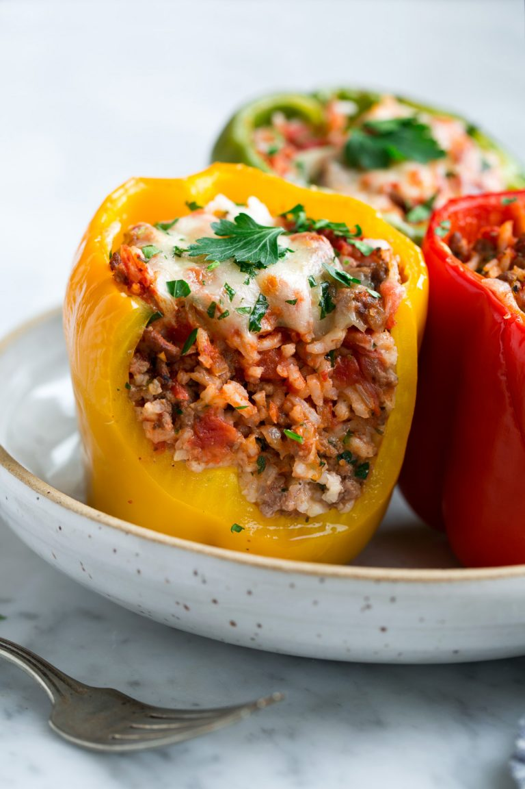

Crispy Potato Skins

Stuffed Peppers
Both you and the Peppers will be stuffed!
What you will need
- Long grain white rice
- Bell Peppers
- Olive Oil
- Ground Beef
- Yellow Onion
- Fresh Galic
- Canned Petite diced tomatoes
- Tomatoe Sauce
- Italian Seasoning
- Fresh Parsley
- Mozzarella cheese
Directions
- Preheat oven to 400 degrees.
Cook rice according to package instructions.
- Meanwhile, trim about 1/4-inch from tops of bell peppers
and then remove stems, ribs and seeds.
Fill a baking dish just large enough to fit peppers
with about 1/2-inch of water.
- Place peppers upside down in water,
cover tightly with foil and bake 20 minutes.
- Meanwhile heat olive oil in a lage non-stick skillet
over medium heat.
- Add onion and saute 3 minutes.
Move onions to far side of the skillet.
- Add beef in chunks, season with salt and pepper
then let sear until browned on bottom, 2-3 minutes
- Break up beef and toss with onions and continue to cook 2 minutes,
add garlic and cook until beef is cooked
through about 1 minute longer.
- Remove from heat,
drain off excess fat (I like to tilt skillet to one side
and dab up excess fat using tongs and paper towels).
- Stir in tomatoes, half of the tomato sauce (about 1/2 cup),
cooked rice, parsley, Italian seasoning and season with salt
and pepper to taste.
How Long To Cook Stuffed Peppers
- Reduce oven temperature to 350.
Turn par-baked peppers upright and fill with beef filling.
- Pour remaining tomato sauce over peppers.
Cover with foil and continue to bake 20 minutes.
- Remove from oven, sprinkle with cheese,
return to oven and bake until peppers have reached desired tenderness,
about 10 – 20 minutes (thinner peppers will be
done near lesser time thicker near greater).
Sprinkle with parsley and serve warm.